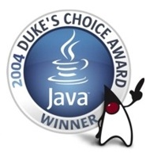
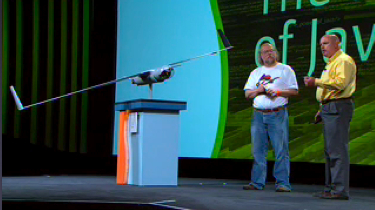
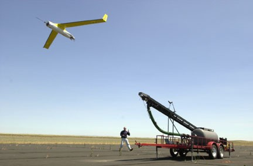

NEWS
September 2009: A bug-fix release after bug-hunting during hundreds of hours of benchmarking for RTSS and JTRES papers. Ovm includes a configurable RTGC framework (Minuteman), which allows selection from different RTGC features: time-based scheduling (slack vs. periodic vs. hybrid which combines the two), incrementality, Brooks or replication style defragmentation, incremental object copy for replication.
May 2009: In addition to periodic time-based scheduling, Ovm also supports slack-based scheduling, allowing to compare the performance and robustness of the two. Ovm now can run most of the Dacapo benchmarks.
April 2009: Support for arraylets.
October 2009: Ovm's RTGC supports incremental stack scanning and dynamic defragmentation.
August 2008: Core parts of Ovm are ported to RTEMS real-time operating system. It runs on RTEMS/LEON3 and RTEMS/x86.
June 2008: Ovm supports low-level direct access to hardware registers using hardware objects and allows to write hardware interrupt handlers, both under Linux/Xenomai/x86.
May 2008: Ovm supports native scheduling using Pthreads.
March 2008: Ovm runs the SPEC JBB benchmark.
April 2008: Ovm's Java to C translator now supports plain C in addition to C++. A simple C implementation of Java exceptions allows GCC to generate faster code compared to C++ exceptions.
February 2005: Ovm now under a BSD licence.
Version 1.01 released (here).
Purdue press release (here).
June 2005: DUKE's
CHOICE
ScanEagle Autonomous Navigation of Unmanned Air Vehicle wins Duke's
Choice Award.

Boeing and leading universities working with Real-Time Java technology recently demonstrated autonomous navigation capabilities in an unmanned air vehicle (UAV) known as the ScanEagle.
The ScanEagle is a low-cost, long-endurance UAV developed by Boeing and the Insitu Group. The UAV is four feet long, has a 10-foot wingspan, and can remain in the air for more than 15 hours. The primary use of the ScanEagle vehicle is to loiter over trouble spots and provide intelligence, surveillance and reconnaissance (ISR) data.
During a recent research flight demonstration, Boeing used Real-Time Java technologies to enhance the performance of the ScanEagle. A "payload board," inserted into the avionics bay and programmed in Real-Time Java technology, can provide autonomous route planning and navigation of the ScanEagle UAV during threat observation, battle damage assessment, and "offset stare" from a no-fly zone during missile launches.

James Gosling and Ed PLa at JavaOne.
April 2005: Ovm FLIES IN THE PCES CAPSTONE DEMO
Boeing and leading universities working with Real-Time Java technology recently demonstrated autonomous navigation capabilities in an unmanned air vehicle (UAV) known as the ScanEagle for the DARPA PCES capstone demo at White Sands Missile Range.
The ScanEagle is a low-cost, long-endurance UAV developed by Boeing and the Insitu Group. The UAV is four feet long, has a 10-foot wingspan, and can remain in the air for more than 15 hours. The primary use of the ScanEagle vehicle is to loiter over trouble spots and provide intelligence, surveillance and reconnaissance (ISR) data.
During a recent research flight demonstration, Boeing used Real-Time Java technologies to enhance the performance of the ScanEagle. A "payload board," inserted into the avionics bay and programmed in Real-Time Java technology, can provide autonomous route planning and navigation of the ScanEagle UAV during threat observation, battle damage assessment, and "offset stare" from a no-fly zone during missile launches.

ScanEagle